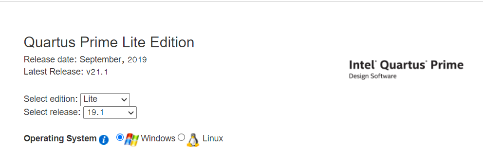
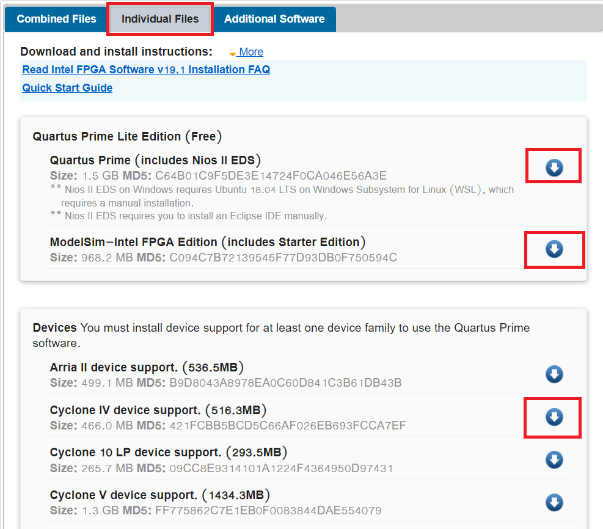
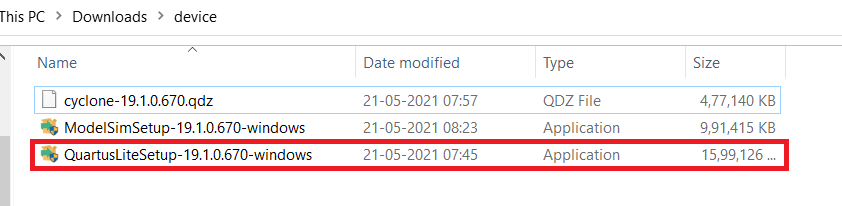
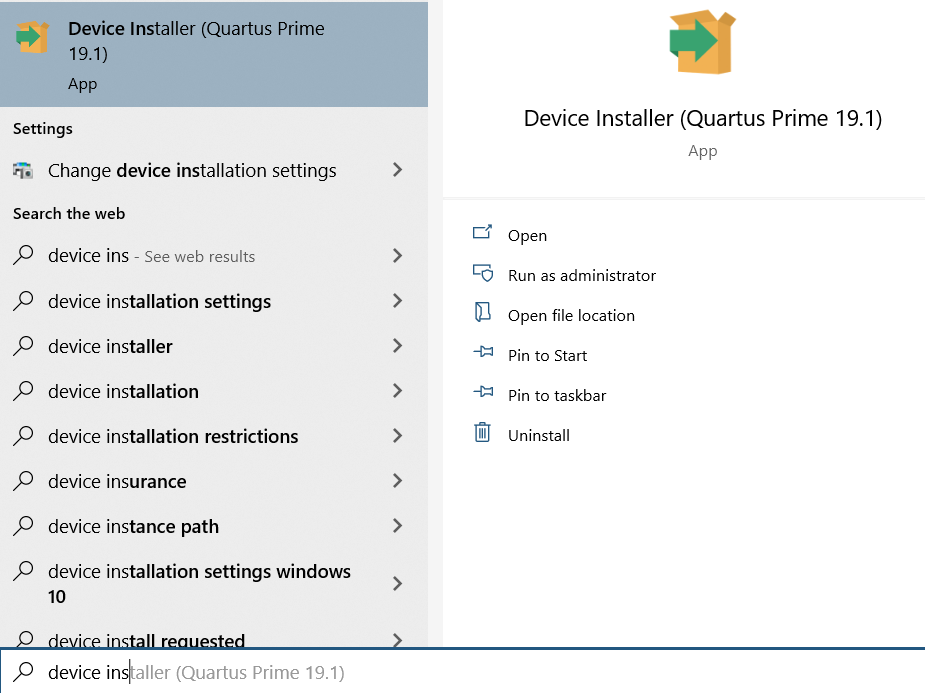
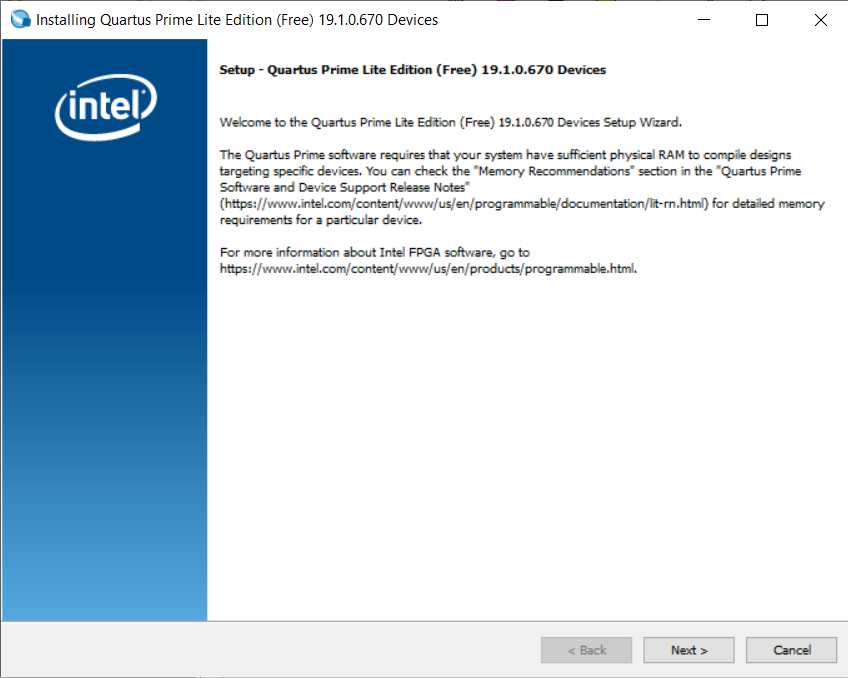
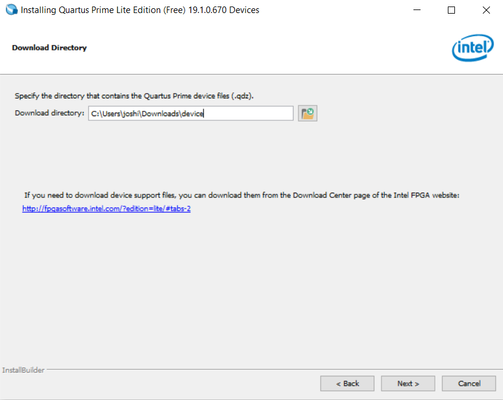
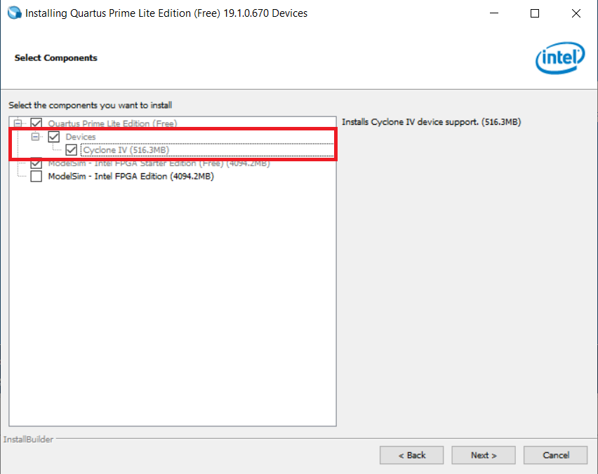

Installation of Quartus Prime 19.1 Lite & ModelSim
Please follow below link for the installation of the softwares.
Please select the options which are displayed below

There are two ways for installing the software:
- Installing by downloading
Combined Files - Installing by downloading
Individual Files
We will Download from Individual files since we are working with a perticular board so it will save some data :)
Please select the options which are displayed below and download 3 files for getting started with installation.

After downloading the files this 3 files will be there in download folder or it will be on the perticular path which you have selected.

Installation steps
-
Double click on highlited application and install it with the default options.
- At the end it will take some time for getting Quartus and ModelSim installed.
-
After the installation we need to add the device which is
Cyclone 4, It's for getting the support ofde0 - neno board.- copy the
cyclone-19.1.0.670.qdzfile( which is forCyclone IVsupport file) in theC:/intelFPGA lite/19.1/modelsim ase/win32aloemfor getting the support of that device family while working with the project. - QDZ file is a Altera Quartus II Device Package. Altera Quartus is a programmable logic device design software from Altera which is now owned by INTEL.
- copy the
- There is another way of adding the device!
- click on start menu and search for
Device installer
- click on start menu and search for

- Open this application and do as directed

- Click on the next

- Select the folder in which you are having
.qdzfile/files and then click on the next.

- Select the required device and click on the next and get it done!
Now the installation is done ;)